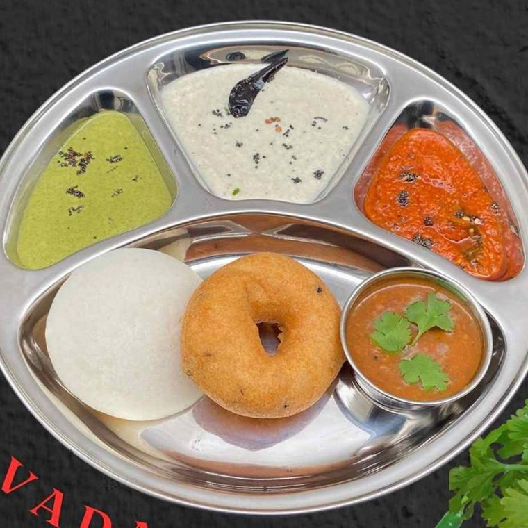
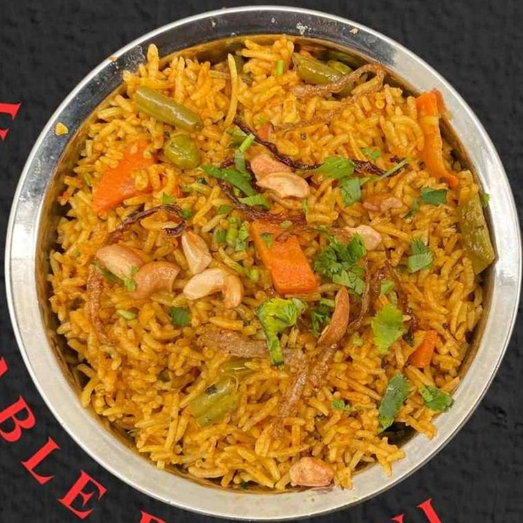
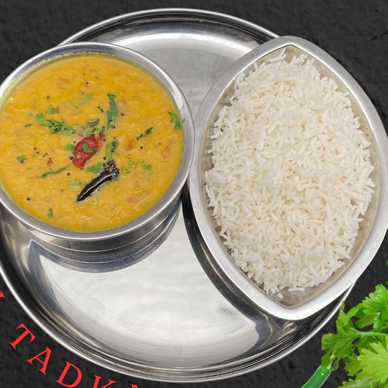
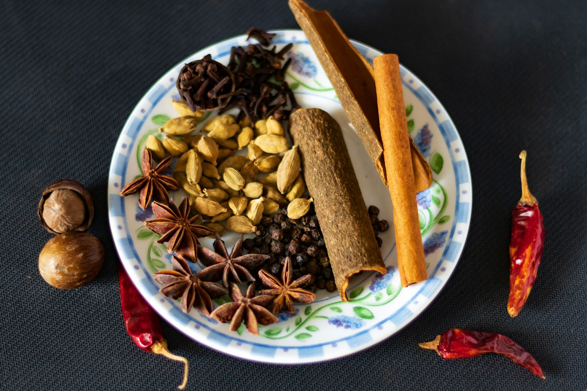

Namaste
श्रीShreeश्री
Vegetarisch Indiaas restaurant in Haarlem. Krokante dosa's, geurige curry's en tandoori, van Zuid- tot Noord-India.
Eat healthy. Live healthy.
Di t/m zo open vanaf 17:00 uur, in het weekend ook voor lunch.



Welkom bij Shree
Shree is een plek waar de Indiase vegetarische keuken tot leven komt. Na twintig jaar ervaring in de horeca openden we onze eerste vestiging in Nederland, hier aan de Kruisweg in Haarlem.
Bij ons eet u in een ontspannen, informele sfeer. Op de kaart vindt u krokante dosa's, aromatische curry's, tandoori-specialiteiten en Indiase streetfood. Alles wordt met zorg bereid, volgens traditionele recepten en met verse ingrediënten.
Van onze keuken naar uw tafel: een maaltijd die smaak, traditie en samenzijn viert.
Ons team
Onze koks komen uit India en zijn elk specialist in hun eigen keuken. Ze kennen de traditionele smaken en technieken en zijn speciaal getraind om ook de Europese gast te verrassen, met elke keer dezelfde kwaliteit.
Reserveren
Reserveren gaat telefonisch via 023 711 90 00. Online reserveren is in voorbereiding.

Onze ingrediënten
We kiezen onze ingrediënten zorgvuldig, op versheid en smaak, en controleren ze streng op kwaliteit. Voor de echte Indiase smaak importeren we de benodigde Indiase groenten rechtstreeks uit India.
Ons team controleert de kwaliteit regelmatig, zodat alleen het beste op uw bord komt.
Eat healthy. Live healthy.
Alles op onze kaart is vegetarisch, en er zijn ook vegan gerechten.
Afhalen en bezorgen
Liever thuis eten? Bestel online voor afhalen of bezorging. Bestellen kan tot 21:00 uur, op dezelfde dagen dat we open zijn.
Afhalen en bezorgen
| Maandag | gesloten |
| Dinsdag | 17:00 - 21:00 |
| Woensdag | 17:00 - 21:00 |
| Donderdag | 17:00 - 21:00 |
| Vrijdag | 17:00 - 21:00 |
| Zaterdag | 12:00 - 15:00 17:00 - 21:00 |
| Zondag | 12:00 - 15:00 17:00 - 21:00 |
Werken bij Shree
Wij zoeken koks. Kook jij graag en laat je je kunnen zien? Kom ons team in Haarlem versterken.
We zoeken getalenteerde koks die ons helpen heerlijke vegetarische en vegan gerechten te maken: van hartige dosa's tot aromatische curry's en sissende tandoori-specialiteiten.
Wat ga je doen
- Een variatie aan vegetarische en vegan gerechten bereiden, waaronder dosa's, curry's en tandoori-specialiteiten.
- Zorgen dat elk gerecht voldoet aan onze hoge eisen voor kwaliteit en presentatie.
- Samen met het keukenteam nieuwe recepten en gerechten ontwikkelen.
- De keuken altijd schoon en hygiënisch houden.
Wat vragen we
- Minimaal 2 jaar ervaring in een vergelijkbare functie.
- Goede kennis van de Indiase keuken en kooktechnieken.
- Je werkt goed in een hoog tempo en houdt bij meerdere taken tegelijk het overzicht.
- Goede communicatieve vaardigheden en een teamspeler.
Interesse? Stuur je cv en motivatie naar info@shreefoods.nl, of kom langs in het restaurant om je voor te stellen.
Kom langs
- Adres
- Kruisweg 53
2011 LA Haarlem - Telefoon
- 023 711 90 00
- info@shreefoods.nl
Openingstijden restaurant
| Maandag | gesloten |
| Dinsdag | 17:00 - 21:30 |
| Woensdag | 17:00 - 21:30 |
| Donderdag | 17:00 - 21:30 |
| Vrijdag | 17:00 - 21:30 |
| Zaterdag | 12:00 - 15:00 17:00 - 21:30 |
| Zondag | 12:00 - 15:00 17:00 - 21:30 |
Stuur een bericht
Een vraag over een groep, een allergie of een bestelling? Laat het ons weten. Voor reserveren belt u ons het best.